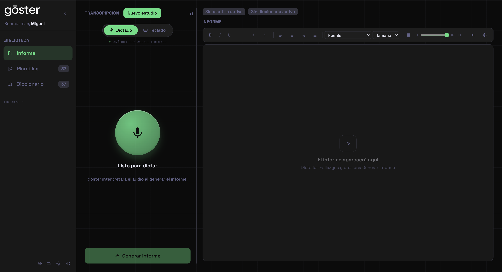
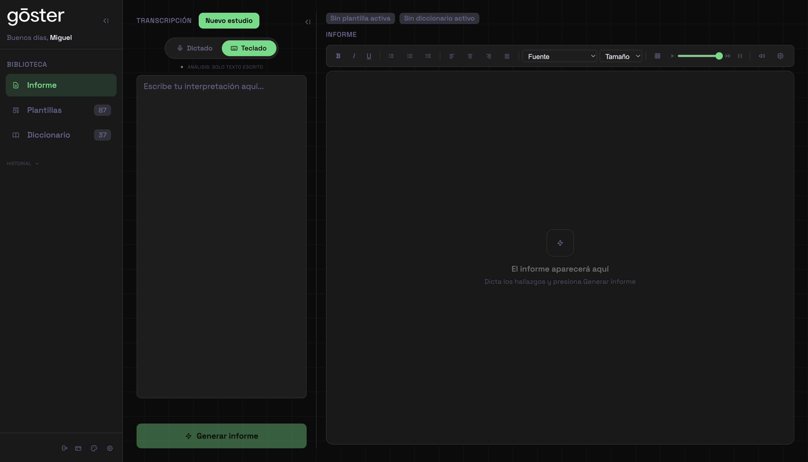
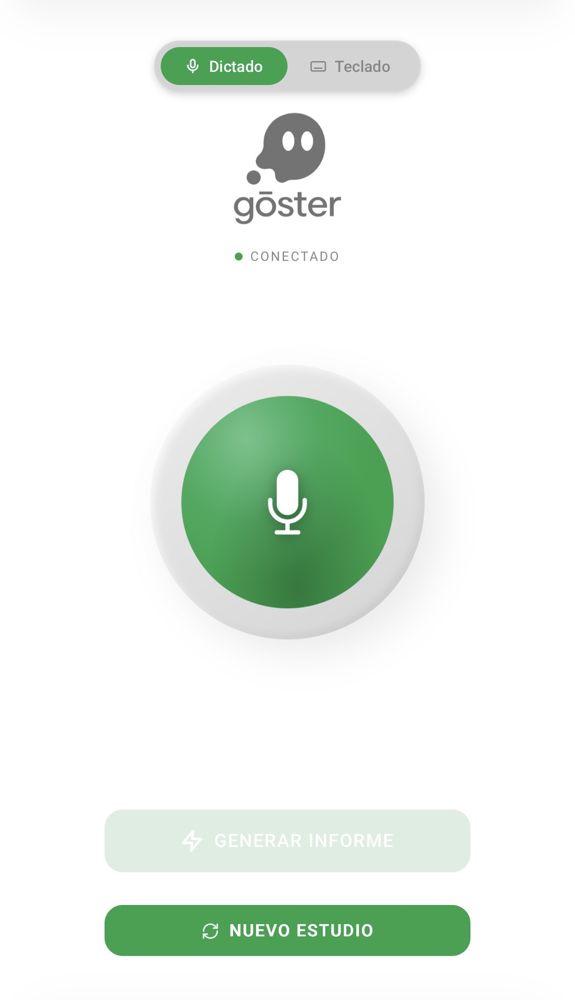
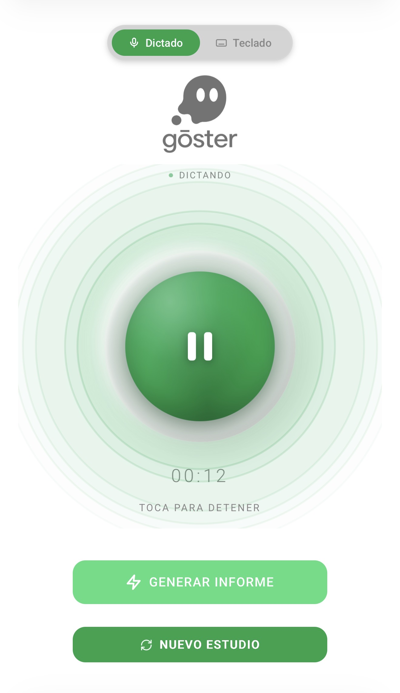

Dedique-se a interpretar com naturalidade. gōster escreve os laudos por você. Com suas palavras, no seu estilo.
Precisamos de ferramentas que funcionem como um colega que te ouve e redige o laudo por você, com o conhecimento clínico que só um radiologista tem.
O mais importante é que aprenda meu estilo pessoal. Cada radiologista tem sua forma de redigir e a ferramenta deve se adaptar, não me impor um formato genérico.
Que seja preciso e verdadeiro. Não pode inventar informação que eu não ditei. Isso é crítico para adoção em um ambiente médico.
A estrutura do laudo deve ser correta, com gramática impecável e respeitando o formato que eu defino.
Seria ideal que pudesse vincular achados com literatura médica atual. Isso daria um valor agregado único.
Tem que ser prática e fácil de usar. Se for complicada, ninguém vai adotar no fluxo diário.
Uma única tela. Três colunas: sua biblioteca, o ditado e o laudo — tudo à vista, sem menus escondidos.


Seu histórico, modelos e dicionário — sempre a um clique de distância.
Alterne entre teclado e ditado. O indicador confirma gravação ativa.
Negrito, listas, alinhamento, tabelas e exportação — pronto para assinar.
O nome nasce de ghostwriter — o escriba invisível.
gōster é seu ghostwriter personalizado: escreve como você, com você e para você. Não impõe um formato. Não tira seu controle. Apenas escreve — como você faria, no seu ritmo.
Comente o caso como se falasse com um colega. A IA entende sua intenção clínica.
Cada correção melhora os próximos laudos. Seu dicionário cresce com o uso.
Se você não ditou, não aparece. Sem alucinações. Sem invenções.
Conecte seu dispositivo móvel e use o gōster como microfone sem fio. Dite achados junto ao paciente, no consultório ou onde estiver — o laudo é gerado no seu computador em tempo real.


Ditado de voz a laudo profissional. Aprende do seu estilo. Cada detalhe pensado para seu fluxo clínico.
Fale como com um colega. Do seu computador ou celular via QR.
Entende sua intenção clínica. Tolera erros de ditado e sinônimos.
Ao ativar um modelo, o dicionário correspondente é vinculado automaticamente.
Achados, conclusões diagnósticas e formatação profissional instantânea.
Regras por modelo: cálculos, convenções e terminologia específica.
Dite e preencha tabelas clínicas dentro do laudo com sua voz.
Cada correção se torna uma regra. Seu estilo se replica automaticamente.
Tema claro/escuro, tom sépia a branco e 23 cores de destaque + personalizável.
Sem instaladores, sem curva de aprendizado. Configure uma vez e dite pelo resto da carreira.
Carregue um laudo normal por cada tipo de exame. O gōster detecta a modalidade e você pode adicionar instruções especiais por modelo.
Suba laudos patológicos anteriores. O gōster extrai triggers e descrições, anonimiza dados do paciente e unifica entradas sem duplicar.
Ative o modelo com a voz: "ressonância magnética de ombro". O dicionário se vincula sozinho. Dite seus achados e pressione Gerar.
O gōster extrai cada achado da conclusão como trigger e associa sua descrição clínica completa do corpo do laudo.
As medidas são eliminadas — a descrição fica genérica e reutilizável.
Insere a descrição completa com as medidas, lateralidade e níveis que você dita naquele momento.
Um trigger pode ter múltiplas variantes para evitar laudos repetitivos.
Defina regras globais e por exame. O gōster as aplica em cada laudo — sem lembretes, sem retrabalho.
Defina seu estilo de redação, terminologia preferida e convenções. O gōster as respeita sempre.
Cada modelo pode ter suas próprias regras: cálculos, convenções, classificações. Combinam-se com as globais.
Se seu modelo inclui tabelas (medidas, ângulos, classificações), apenas dite os valores. O gōster identifica a qual campo pertence cada valor e preenche a tabela com o formato correto. Sem tocar no teclado.
Três passos. Sem curva de aprendizado.
Use o microfone do seu computador (integrado ou externo) ou vincule seu celular por QR para usá-lo como microfone sem fio.
Laudo estruturado com achados e conclusão diagnóstica, aplicando seu modelo e dicionário.
Corrija por voz (não precisa tocar no teclado) e copie com formatação. Compatível com Word e texto simples.
O primeiro laudo é bom. O quinto é melhor. O décimo é seu.
Você edita um laudo, salva as alterações, e o gōster aplica esse padrão no futuro. O que hoje você corrige, amanhã já não precisa tocar.
Novas entradas são incorporadas automaticamente a partir das suas correções. Seu vocabulário clínico se expande sem esforço.
Seus laudos anteriores são memória ativa. O gōster lembra seu estilo, suas equivalências diagnósticas e suas decisões.
Valida cada parágrafo para evitar contradições. Se você dita uma lesão, não adiciona frases de normalidade incompatíveis.
O gōster domina a linguagem radiológica. Sem modelo, sem dicionário — apenas dite seus achados e receba um laudo profissional com estrutura, terminologia e conclusões diagnósticas.
Fale como se comentasse o caso. Sem configurar nada.
Achados estruturados, conclusão diagnóstica e formatação profissional.
Revise, ajuste se quiser, copie e cole. Simples assim.
Seu espaço de trabalho, do seu jeito. Mude quando quiser — o gōster se adapta.
Mude com um clique.
Sépia a branco no claro. Preto a cinza no escuro.
Escolha a que representa seu estilo.
Sem contratos de longo prazo. Cancele quando quiser.
Teste tudo sem compromisso.
Ideal para começar.
Sem limites. Para alta demanda.
Para instituições e grupos de radiologistas.
Teste grátis por 7 dias. Sem cartão de crédito, sem compromisso. Acesso ilimitado.